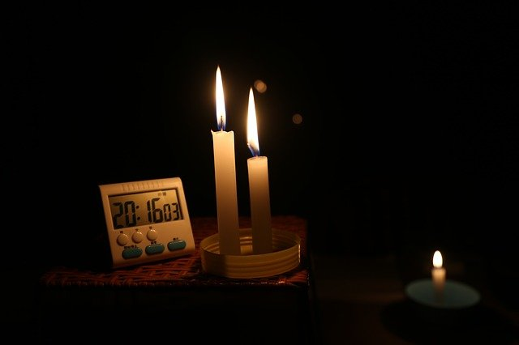
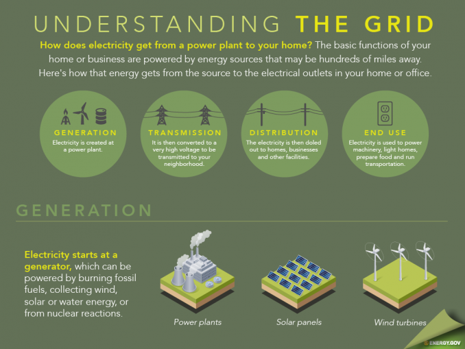
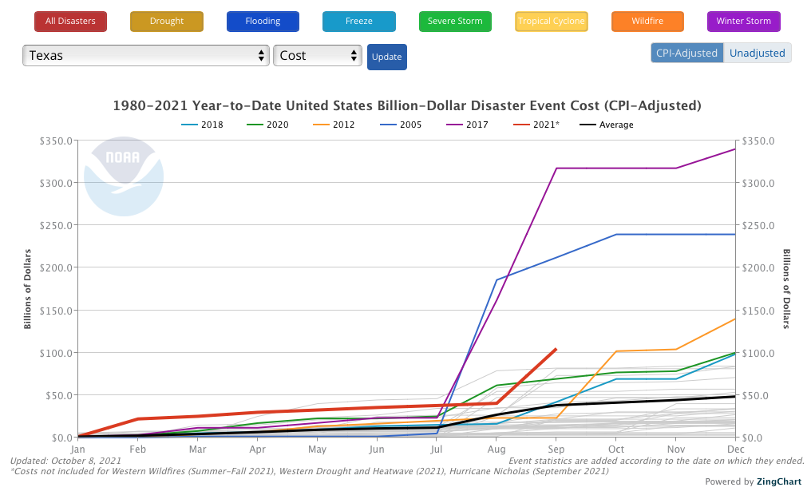

Kara Norton
March 25, 2021
Imagine millions of people stranded in the cold without electricity, heat, or running water. Infrastructure has been crippled. Families are huddling for warmth in parked cars, and boiling water in their homes to ensure it is safe to drink. This may sound like the plot of a post-apocalyptic film, but it was very much a reality for millions of people across Texas last month.
The week of February 13-17, a record-setting winter storm named Uri engulfed the state of Texas and brought with it plunging temperatures.
Nearly 50% of Texas is powered by natural gas, 20% by coal, another 20% by wind and solar, and 10% by nuclear energy, according to the U.S. Energy Information Administration (EIA). With summer temperatures regularly soaring above 90 F, Texas energy systems safeguard against heat. The state’s power plants and natural gas system are not optimized for freezing conditions. Although Texas experienced a similar energy crisis 10 years ago, and investigations concluded that Texas energy producers needed to insulate and winterize their systems for extreme cold, most systems remain poorly insulated.
 Two lit candles in front of a digital clock. (Boyan_Chen/Pixabay)
"As weather conditions worsened and temperatures dropped in February, much of the state’s infrastructure for producing and delivering electricity simply froze," says Michael Webber, an energy resources professor at the University of Texas at Austin.
Webber notes that several coal plants turned off because of frozen equipment at the plants. Along with some snow-covered solar panels and frozen wind turbines, there were a series of outages throughout the system. These outages turned off electricity in different parts of the state, including sections of the natural gas system that are electrically operated, such as pumps and antifreeze injection systems. This led to the shutdown of even more power plants, producing a perfect storm of power failures.
All the while, Texas residents were turning up the heat, leading to a surge in demand.
As a result of the freezing conditions and rapid surge in energy usage, the state’s power grid began to malfunction, leading to cascading failures in the system and widespread blackouts. The infrastructure failure was then compounded by Texas' energy grid independence and lack of resilience, because most of Texas does not have the option of channeling energy from other states.
During the storm, at least 4.5 million electricity customers in Texas lost power, an estimated 57 people died due to hypothermia, and about 12 million people received “boil notices” because of water quality issues, the Texas Tribune reported.
“So we have a water problem—freezing water, become a gas problem, become a power problem, become a bigger gas problem, become a bigger power problem, become a water problem and a humanitarian crisis,” says Webber.
One resident who found herself without power for three nights was Harris County Judge Lina Hidalgo. Prior to the storm, Hidalgo warned her county’s nearly 5 million residents about the impending winter storm, but this did not spare her from the ferocity of the blizzard or the lack of preparation by utility companies.
“It’s worth asking the question: Who set up this system and who perpetuated it knowing that the right regulation was not in place?” Hidalgo told the Associated Press. “Those questions are going to have to be asked and I hope that changes will come. The community deserves answers.”
In the aftermath of the Texas energy crisis, many are asking questions. How did this happen? Who is to blame? What role did natural gas, coal, and renewable energy play in the crisis? And how can we prevent a similar disaster from happening again?
To answer these questions, one must understand America’s energy grid and how power is distributed.
 Graphic illustrating how electricity travels(Department of Energy)
When it comes to its grid, Texas is an island. In the United States, there are three grids: east, west and Texas. Texas has an independent grid, which allows it to be untethered by federal regulation, and unlike most other states, it can generate enough electricity within its borders to be self-sufficient.
However, this also means that if something goes wrong, the state has difficulty importing power from neighboring states, leaving infrastructure vulnerable should extreme weather events cripple the system, says Webber.
“So what happened in Texas, it’s not just about Texas,” says environmental engineer Greeshma Gadikota. “It’s about the need to rethink our energy infrastructure, the need to build in resilience in response to a changing climate in many, many different parts of the world. The risks 20, 30, 40 years ago are different from the risks that we face now.”
According to Webber, we’re building our infrastructure for yesterday’s weather, not tomorrow’s weather. “The next hundred years will be different,” says Webber. “We know this, that the weather events will be more extreme and more frequent, which means hotter and colder, wetter and drier. So we have to deal with this and design for that.”
The role of renewable energy in the Texas energy crisis.
As power started to come back online following the storm, false information began to circulate regarding renewable energy and its connection to the energy crisis, reports The Texas Tribune. Some even identified frozen wind turbines in West Texas as the root of the state’s energy supply problem. In reality, wind power makes up only a fraction of the energy generated during the winter in Texas.
“Texas is a gas state,” says Webber.
Yet, some misleadingly attributed the power outages to frozen wind turbines.
“This is what happens when you force the grid to rely in part on wind as a power source,” U.S. Rep. Dan Crenshaw, tweeted in mid-February. “When weather conditions get bad as they did this week, intermittent renewable energy like wind isn’t there when you need it.”
During the storm, at least 4.5 million electricity customers in Texas lost power, an estimated 57 people died due to hypothermia, and about 12 million people received “boil notices” because of water quality issues, the Texas Tribune reported.
“We should never build another wind turbine in Texas,” read a Facebook post from Texas Agriculture Commissioner Sid Miller. “The experiment failed big time.”
However, malfunctions in natural gas, coal, and nuclear energy systems were to blame for nearly twice as many outages as frozen wind turbines and solar panels, stated the Electric Reliability Council of Texas (ERCOT), which runs the state’s power grid, during a press conference in February.
The world’s energy consumption is predicted to grow by 56% in the next 25 years, according to the U.S. Energy Information Administration (EIA). As the demand for energy swells, the stores of fossil fuels we currently depend on are dwindling and becoming more costly to obtain. The burning of these fossil fuels also discharges carbon, which has long-lasting negative effects on the environment—contributing to greenhouse gases that warm the planet and contribute to climate change.
 The Texas winter storm compared to other natural disasters this year. (National Centers for Environmental Information)
With demand for energy swelling, the Texas energy crisis serves as a wake-up call which exposes “cascading failures” in the infrastructure of the U.S. electric system. It also reveals that these systems may not be ready to absorb the frenetic climate-related spikes in demand for power that Winter Storm Uri produced, reports NBC News.
As we continue to develop our renewable energy sources, electric grid regulators say the U.S. will need to develop vast supplies of power storage, such as gigantic batteries, which rely heavily on innovative technologies.
As we grow more dependent on infrastructure to remain resilient during extreme fluctuations in temperature and weather conditions, we have to prepare ourselves and educate students on how communities will need to develop different renewable energy sources and energy storage technologies to meet their unique needs and environmental contexts. One helpful resource is the NOVA Energy Lab, where students investigate what energy is, how it can be converted into useful forms, and why some sources are running low. It also allows students to compete to see whose renewable energy system designs can produce the most power.